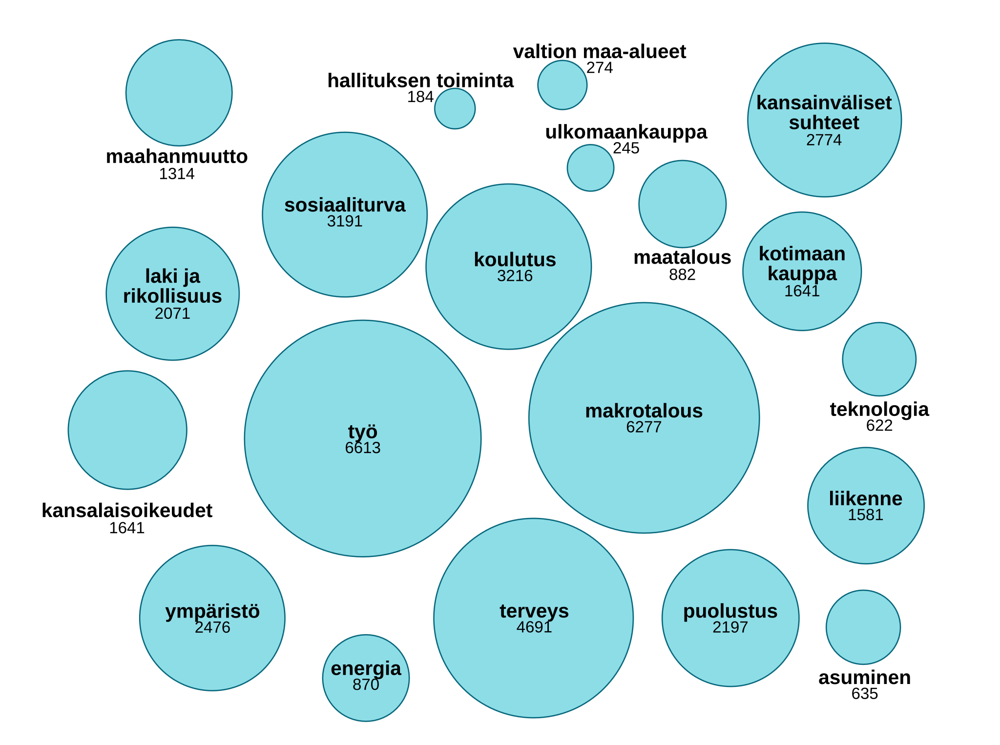

Työstä puhuttiin huomattavan paljon
Alla oleva visualisointi luo yleiskuvan puheenvuorojen painopisteistä Orpon hallituksen aikana. Työhön luokiteltuja puheita oli enemmän kuin maahanmuuttoon, ympäristöön ja puolustukseen liittyviä puheita yhteensä. Teemojen alapuolella olevat luvut kertovat, kuinka monta puhetta teemaan luokiteltiin.

Aineistossa kaikki Orpon hallituksen puheenvuorot aikaväliltä 20.6.2023 - 10.6.2026. Aineisto: Eduskunnan avoin data
Puheiden luokittelussa käytettiin Comparative Agendas Projectin (CAP) politiikan aihealueiden luokitusta. Analyysia varten laadittiin avainsanasto, jonka sanat jaettiin CAP-luokituksen mukaisiin 20 teemaan. Menetelmästä kerrotaan tarkemmin jutun lopussa.
Työstä, makrotaloudesta ja terveydestä puhuttiin eniten
Puheet luokiteltiin liittyvän työhön, jos ne sisälsivät työhön liittyviä avainsanoja. Näitä avainsanoja olivat muun muassa ammattiin, palkkaan, irtisanomiseen, työllisyyteen, työpaikkoihin ja työntekijöihin liittyvät sanat.
Makrotalouteen liittyvät avainsanat liittyivät muun muassa erilaisiin veroihin ja verotukseen, talouskasvuun, kasvutoimiin, valtiontalouteen, leikkauksiin ja valtion velkaantumiseen.
Terveyteen liittyvät avainsanat liittyivät muun muassa terveydenhuoltoon, sote-alaan, sairaaloihin ja terveydenhuollon ammatteihin.
Monet puheista sisälsivät useampaan teemaan liittyviä avainsanoja. Puheet on luokiteltu liittyväksi korkeintaan kolmeen teemaan. Vähintään 30 prosenttia puheen avainsanoista täytyi liittyä teemaan, jotta puhe luokiteltiin siihen liittyväksi. Jos puhe sisälsi esimerkiksi 15 avainsanaa, joista 7 liittyi terveyteen, 5 työhön ja 2 makrotalouteen, luokiteltiin puheen liittyvän terveyteen ja työhön.
Noin 6,5 prosentissa puheista ei esiintynyt yhtään avainsanaa, joten näitä puheita ei luokiteltu yhteenkään teemaan.
Hallitsevat teemat liittyvät laajasti ihmisten arkeen
Työllisyyden, makrotalouden ja terveyden korostumista voisi osaltaan selittää niiden läheinen yhteys ihmisten arkeen. Teemat kytkeytyvät muun muassa toimeentuloon, julkisiin palveluihin ja yhteiskunnan taloudellisiin toimintaedellytyksiin.
Makrotalouden osa-alueet ja sitä koskevat päätökset vaikuttavat moniin politiikan osa-alueisiin. Esimerkiksi julkisen talouden tila vaikuttaa terveydenhuollon, koulutuksen ja sosiaaliturvan rahoitusmahdollisuuksiin. Talouden yleinen kehitys, kuten inflaatio ja korot, vaikuttavat niin kotitalouksiin, yrityksiin kuin julkiseen sektoriin.
Makrotalouteen liittyvät leikkaukset ja verotus kytkeytyvät myös suoraan ihmisten arkeen. Leikkaukset voivat näkyä esimerkiksi palveluiden karsimisena. Verotus puolestaan näkyy esimerkiksi tuotteiden ja palveluiden hinnoissa.
Toisaalta myös asuminen ja liikenne ovat teemoina lähellä ihmisten arkea, mutta ne eivät korostuneet puheenvuoroissa teemoina lainkaan yhtä paljon. Kyse voisi olla siitä, että liikenne ja asuminen ovat teemoina esimerkiksi makrotaloutta suppeampia.
Analyysin tuloksista ei kuitenkaan suoraan voi päätellä, miksi tietyt teemat olivat yleisempiä kuin toiset.